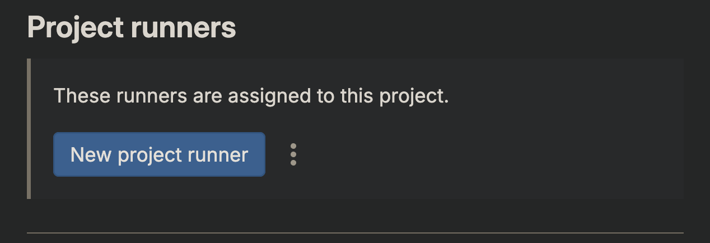
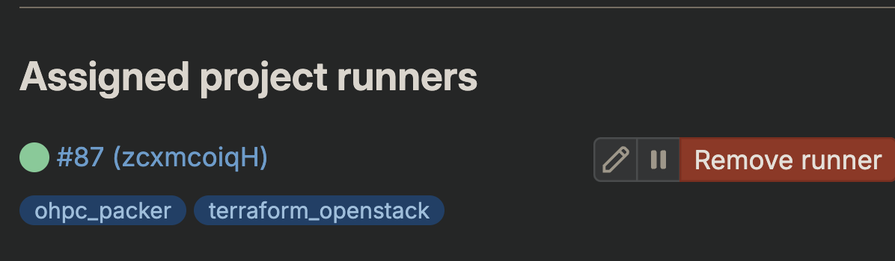

Setting up personal GitLab runner¶
This document provides instructions on setting up your own personal gitlab runner
Initiate gitlab runner¶
- On the project, where you need to setup GitLab runner goto Settings -> CICD -> Runners (Expand)
- Click on
New project Runneras shown below:  - Give a name to the runner, and some tags, and click on
Create Runner
{kind=link}
Setup runner machine¶
- Create a VM on OpenStack
- SSH onto the VM
Install GitLab runner¶
-
Download the binary for your system
-
Give it permission to execute
-
Create a GitLab Runner user
-
Install and run as a service
Register runner¶
- From the
Register runnerpage copy the code from 1st step: - While registering the runner, give the local name for your runner.
- You can choose any executor for the runner, in this case we would choose docker as the executor.
Start runner¶
You can manually verify that the runner is available to pick up jobs.
Install docker engine on runner¶
Since we used docker executor we need to setup a docker engine on the runner machine. Follwoing instructions are for installing it on ubuntu 22.04
Add Docker's official GPG key:¶
sudo apt-get update
sudo apt-get install ca-certificates curl gnupg
sudo install -m 0755 -d /etc/apt/keyrings
curl -fsSL https://download.docker.com/linux/ubuntu/gpg | sudo gpg --dearmor -o /etc/apt/keyrings/docker.gpg
sudo chmod a+r /etc/apt/keyrings/docker.gpg
Add the repository to Apt sources:¶
echo \
"deb [arch=$(dpkg --print-architecture) signed-by=/etc/apt/keyrings/docker.gpg] https://download.docker.com/linux/ubuntu \
$(. /etc/os-release && echo "$VERSION_CODENAME") stable" | \
sudo tee /etc/apt/sources.list.d/docker.list > /dev/null
sudo apt-get update
Install the latest version of docker engine¶
sudo apt-get install docker-ce docker-ce-cli containerd.io docker-buildx-plugin docker-compose-plugin
Verify that docker is running¶
Verify runner is running via GitLab¶
- On the project, where you setup GitLab runner goto Settings -> CICD -> Runners (Expand)
- If all the steps have succeeded, then you should see a green symbol next to the runner that you created. 
{kind=link}